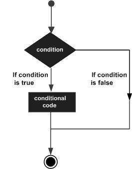

Python Review#
Learning Objectives#
The purpose of this notebook is for you to review some of the Python covered in Bootcamp Prep, including the following:
Assigning variables
Classifying and explaining data types (integers, floats, strings, booleans, lists, dictionaries, and tuples)
Identifying comparators and boolean operators to create conditional code
Making use of lists: indexing, appending, and joining them
Making use of dictionaries: identifying, creating, and navigating them
Moving between lists and dictionaries (zipping lists together to make dictionaries, or pulling relevant data from a dictionary into a list)
Applying for loops to lists and dictionaries
Some new things we’re bringing up that weren’t covered in Bootcamp Prep:
Using f-strings or
.format()to print readable code with variablesUsing
.zip()to combine two lists into a dictionary
To do all that, we are going to code up versions of a bento box:#

Bento boxes can have multiple ingredients and choices#
By the end, we want to combine multiple bento orders into one data collection, and print each item for the restaurant.
Variable assignment#
Let’s start with our first bento order:
# Run this cell without changes
main = "rice"
protein = "salmon"
oz_of_protein = 4.5
number_of_sides = 3
side1 = 'seaweed'
side2 = 'onigiri'
side3 = 'turnip pickle'
great_bento = True
Now, if we wanted to change our protein to ginger chicken, how would we do that?
# Code here to change protein
And changing the amount of protein to 3.5?
# Code here to change oz_of_protein
We can reassign variable values easily.
Now, we assigned those variables one at a time. We also can assign multiple values at once:
side1, side2, side3 = "carrots", "kimchi", "mushrooms"
Update your side order to match your preferences - add whatever you want!
# Code here to change sides
Then use print() to confirm the variables changed.
# Code here to confirm your changes
Variable Types#
Each variable in our bento box has a type.
# Run this cell without changes
type(side1)
Run type() on some of the remaining variables to explore the type options.
# Code here to check other variable types
Each data type in Python has a set behavior in a lot of ways, and knowing what type your variable is can help you know exactly what you can do with it!
Control Flow Operators, If Statements and Conditionals#
Now what if you have food allergies, or want to be able to evaluate a variable before changing it for any other reason?
Well you’re in luck, cause we have control flow operators and if statements and conditionals!
Control flow operators include:
== # Is equal to?
!= # Is not equal to?
> # Is greater than?
< # Is less than?
<= # Is less than or equal to?
>= # Is greater than or equal to?
Note that these evaluate something - this is different from setting a variable. With control flow operators like these, you’re asking a question: “Is this equal to that?” “Is this greater than that?” etc!
Decision making using these kinds of evaluators/control flow operators works like this:

The tools used in conditionals are if, elif, and else.
For example:
if (protein == 'salmon'):
print("I love salmon!")
Will I like this bento box?
# Run this cell without changes
if (main == 'rice'):
print("no carbs, please!")
elif(ozofprotein >= 2.5):
print("too much!")
else:
print("I will like this bento box!")
Above, if the main isn’t rice and if the amount of protein is less than 2.5, I think I’ll like the box!
Update the above code example, but rather than print, instead set great_bento equal to True or False depending on the values of the bento box ingredients - feel free to customize the checks based on your own personal preferences!
# Update the code below, based on your own preferences
if (main == 'rice'):
print("no carbs, please!")
elif(ozofprotein >= 2.5):
print("too much!")
else:
print("I will like this bento box!")
# Is great_bento True or False right now?
Using Lists: indexing, appending, joining#

Writing out all those ingredients individually is a pain, let’s put them in a list!
(You can retype your ingredient list, or use the variables you assigned above)
# Replace None with relevant code
bento_ingredients = None
Lists are ordered, meaning you can access the index number for an element:
# Run this cell without changes
bento_ingredients[4]
Or you can grab ranges/slices of a list:
# Run this cell without changes
# Note that our 3rd side is the 4th element above, but we use 5 in the range
# Play around with these numbers, and start to build some understanding of
# which elements are where exactly in the list
bento_ingredients[2:5]
Add items to a list with .append() - add something else you like to your order!
# Code here to add to your list
If you don’t want to keep that last item, you can use .pop() to remove it.
# Code here to test that out
# Now check what your list looks like - is that last item still there?
Now, let’s put our bento box in a readable format using join:
# Run this cell without changes
print("I'd like my bento box to contain: " +
", ".join(bento_ingredients[:-1]) + ", and " + bento_ingredients[-1])
New thing! F-strings allow you to easily format strings to add variables or elements from an iterable (like a list). You can also use .format() in a similar way.
# Run this cell without changes
print(f"My bento box will include {bento_ingredients[0]} and {bento_ingredients[1]}.")
# The above cell is the same as:
print("My bento box will include {} and {}.".format(bento_ingredients[0], bento_ingredients[1]))
Think about it: How is the f-string/format working differently from the join we did before?
Using Dictionaries: Identifying, Creating, Navigating#

No, not that kind!
With your list above, someone would need to tell you that “rice” is the main and “salmon” is the protein.
Dictionaries let you assign key and value pairs, which connects a key like “main” to a value like “rice”. Rather than using indexing, you use keys to return values.
Update your bento box to be a dictionary. There are multiple ways to do this! You can type all of your details out, matching to the information we have from the very beginning of this notebook, or you can use your list and a new list of keys to zip your bento box together.
Make sure to run type() on your dictionary to confirm it is successful.
# Here's an example of zipping two lists together to form a dictionary
bento_keys = ["ingredient1", "ingredient2", "ingredient3"]
bento_values = ["rice", "tempura", "miso soup"]
bento_dict = dict(zip(bento_keys, bento_values))
print(bento_dict)
print(type(bento_dict))
# Code here to create a dictionary from your bento ingredients
# Change things up to whatever you like!
bento_dict = None
# Code here to check your work - check type, and print your dictionary
You use the key of the dictionary to access its value, for example bento_box['main']
# Practice accessing elements in your bento box
Let’s say we want to combine EVERYONE’S bento dictionaries - we can nest those dictonaries inside of a list!
Let’s get a few different bento box orders into a group order - use Slack to send your dictionaries to each other (you’ll want to send everyone the dictionary output, not the code you wrote if you used zip to create your dictionary).
Tip: make sure each of the dictionaries are structured the same, with the same key names for what is in the bento boxes (as in, make sure you each have a main, a protein, and the same number of sides) - for this exercise, it’ll make your life easier later on!
Grab at least two other orders and create a list of different dictionaries:
# Code here to combine your group order
# Code here to check your work
But what if we also want to keep track of whose order is whose? Instead of doing a list of dictionaries, we can do a nested dictionary of dictionaries!

Create a dictionary of dictionaries, where the key is the name of the person ordering and the value is their bento dictionary:
# Code here to create your nested dictionaries
# Check your work
Now, if we wanted a list of people who ordered bento boxes, we could grab a list of those names by using .keys()
# Code here to grab a list of who you have orders for
# Check your work
For loops#
Okay, is anyone confused about for loops? Let’s practice.
Write a loop to print the main ingredient in everyone’s bento order.
(This is easier if everyone named an ingredient ‘main’ in their dictionary, but can be done even if that’s not the case - it’s just more complicated.)
Remember! You have already defined a list of everyone’s names from above! You can use that in your for loop if you like.
# Code here to write a for loop that prints each main
Bringing everything together!#
Now, using the names from the nested dictionaries, can we create a list of tuples with each name along with the protein they want?
(Again, easier if everyone named an ingredient ‘protein’ in their dictionary…)
(What even is a tuple? It’s hard to distinguish them from lists, except they use () instead of []. The takeaway here is that tuples create a single immutable object when grouping data. If you’re having trouble, try to use the linked resource to create your list of tuples below.)
# Code here to create a list of tuples for each person and their protein
# Code here to check your work
# Tuple list will look like [('person', 'protein'), ...]
Now, print each of your orders as readable sentences.
You can use .join() or f-strings or .format() - no wrong way to do it! You may even want to use nested for loops here!
# Code here to print each order as a human-readable sentence
Reflection:#
What’s a situation where you could use lists and loops to automate a process?